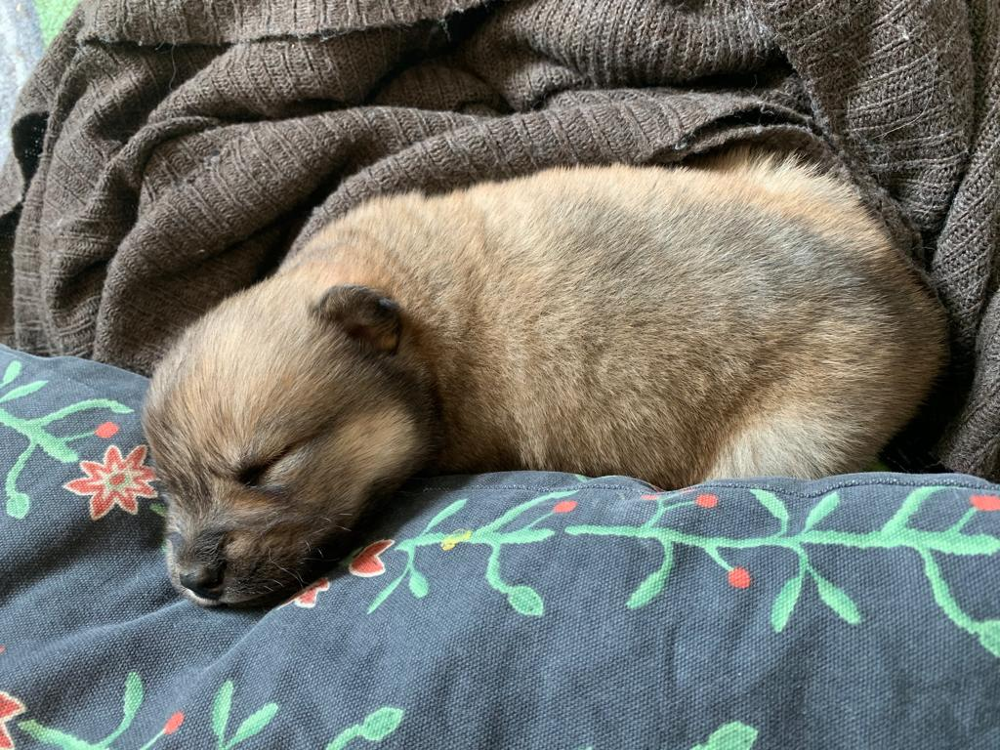
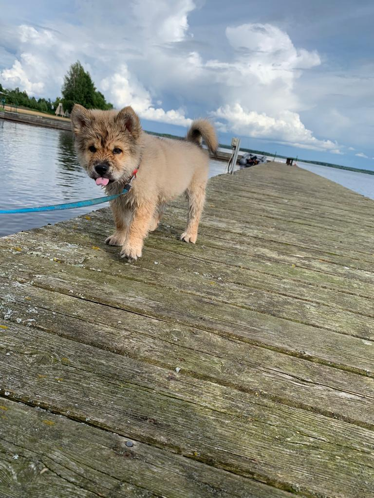
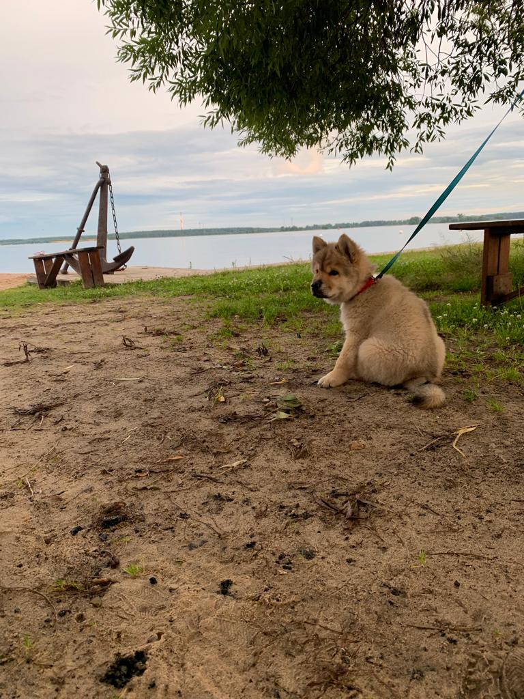
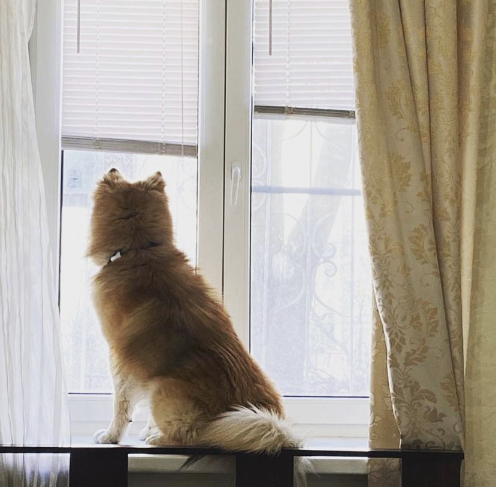

История появления сибо в нашей жизни и новая жизнь для него .
Ещё давно до появления Сибо мы начали думать о появлении в нашей семье собаки . Первый раз подумали о том чтобы завести собаку ещё с конца 2019 года .
Думали долго и много ведь надо было выбрать идеально подходящую пароду ,
спустя несколько недель обсуждений мы сошлись на том что надо собаку пароды - сибаину .Наша позиция была и осталось такой -, что характер , доброта и так далее зависят в основном от хозяев и обстоновки в семье . Что кстати является правдой .
И вот уже в конце марте 2020 года выбор был сделан , мы выбрали собаку пароды сиба ину и начали искать заводчиков .
Интерестный факт - при разговоре с заводчиками нам сказали -"Собака не для выставок" и мы уже сразу поняли что тут гдето небольшой обман ,но нас не так сильно волновал вопрос что это не совсем сибаину.
А теперь давайте к самой мини биографии .
Родился наш маленький герой пятого апреля 2020 года тогда он даже и не догадывался как скоро и круто изменится его жизнь.А пока будучи одним из трёх щенков он на поезде из Орска отправляется в Москву где его уже ждали мы .
Именно тогда он впервые знакомится с нами и на машине отправляется в будущий дом .

Как выбирали имя
Cидя вечером за столом мы обдумовали как назавём собаку .
И тут кто-то из нас сказал <А может Себастьян назовём ?> так как парода - Сиба Ину да и имя Себастьян с чемто плохим не ассицировалось .
Так что выбор был сделан и мы с нетерпением начали ждать .
Сибо растёт
Как и любая другая собака само сабой сиб рос и с этим связан ещё один интерестный факт - так как мы знали что одим месяц равен примерно +3см .
То когда сиб в возрасте 5 месяцев перерос всех сиба ину которые на год старше мы поняли что он не просто сибаину а ещё и на половину чау-чау
, это стало ещё понятней в возрасте 6 месяцев когда морда стала ещё больше похожа на чау-чау , да и форма тела отличалась .Но есть одно но - он стал выглядеть настолько красиво и необычно что мы ещё ни разу не пожелели об этом .
Сиб ростёт до сих пор , только уже не так быстро , а внешне и изнутри уже не меняется .Также Сиб по мере роста менял и предпочтения , например : вместо того что бы думать о кошке дома он думал и гонял кошек на улице , то же самое и
с кормом меняя еду с кроликом на еду с рыбой
Этот периуд его жизни мы назвали - "периуд активного роста"
Именно в этот периуд он отправится покарять Тверскую область и города в ней , увидит первую зиму , отметит свой первый день рожденя и много
чего ещё о чём я расскажу ниже .
Воспитателем Себастьяна стала уже покойная и легендарная в своих кругах кошка - <Сима>
Воспитателем Сибо стала Сима именно она внушит ему кошачьи повадки и некоторые действие которые обычноделают только кошки . Отчасти благодаря ей он познакомился с кошками и как они себя ведут в разных ситуаци
ях . Будучи очень спокойной кошкой она в какомто смысле контролировала его и научила правильно просить ед
у со стола и не только .
Путишествия Сибо
Сибо путишествовал и ездил в разные места немного но интерестно , за каждую даже самую небольшую поездку
куда-либо успевало произойти немало собыий которые мы запомнили надолго . Чуть ниже я расскажу пару прим
еров таких путишествий .
 Дополнительные видео матерьялы и фото будут доступны в двух инсаграммах ниже .
Первымм было то что мы забранировали отель бросили вещи и пошли гулять .
Гуляя по Питеру мы обошли много мест одним из них была набережная где было сделано несколько фото после которых мы дальше отправились ходить . В то время как мы что либо обсуждали Сиб дышал непревычным для него Питерским воздухом .
После этого мы отправились в отель и и Себастьян занял свой пост на подоконнике а мы легли спать . На следующий день мы съезжали с номера и Сибча оставил подарок уборщице в виде чёрного подоконника ( он стал чёрным из-за того что грязь с его лап оставалась только на подоконнике , а ещё он был белым до нас ) После того как мы выселились мы отправились в город Ломоносов немного там погуляв мы решили направится домой через Крандштат и порт домой в Москву . При этом почти всё время щёл дождь и была холодная погода , в общем както так нас провожал домой Санкт Петербург .